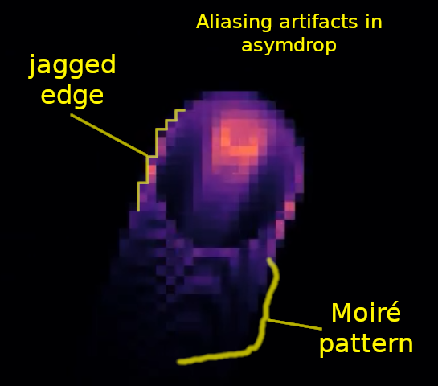

Aliasing and interference

Aliasing artifacts in a low-resolution asymdrop glider (click to revisit the video).
Aliasing occurs when the frequency (or rate of change) in time or space is greater than 1/2 the sampling frequency (The Nyquist frequency).
Higher frequencies wrap around in Fourier space, and appear as lower frequencies (this is the principle behind structured illumination super-resolution microscopy).
e.g. The wagon-wheel effect, jagged "stair-step" edges in images, etc.
For a beautiful example of temporal aliasing in guitar strings, check out AcousticTrench playing the Last of Us theme (youtube)